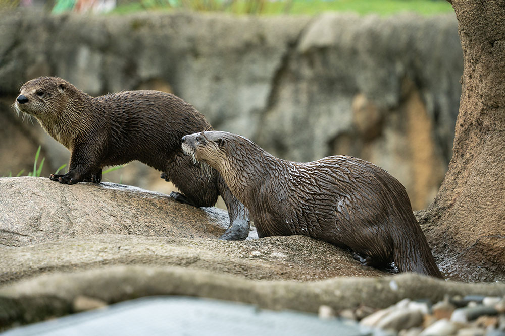
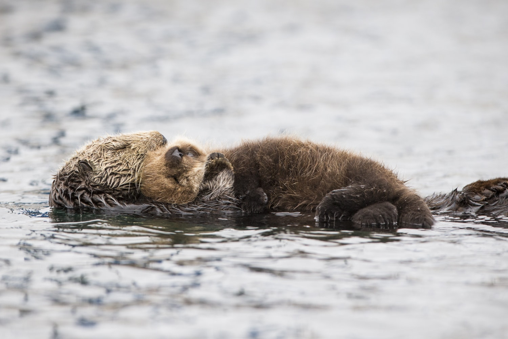
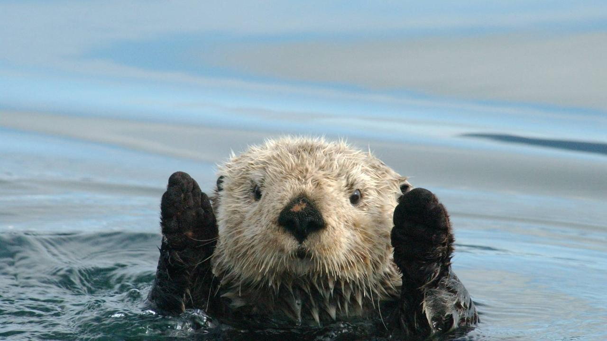
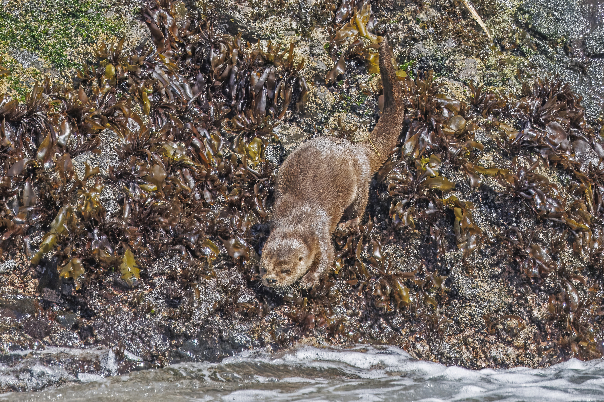

Here you can learn all about my favorite animal, the otter! You can find out information about different species, their habitats, and access other otter-ly helpful resources from the web!
From their playful river slides to their famous sea-otter hand-holding habits, we dive deep into the fascinating world of these charismatic semi-aquatic mammals.


This image depicts two otters, a mother and her child, sleeping while floating along the river.

River otters are playful creatures, and will sometimes interact with humans, as shown in this image of an otter waving hello!

This otter is using its natural camouflage to blend into its surroundings, making it nearly invisible to predators and prey alike.